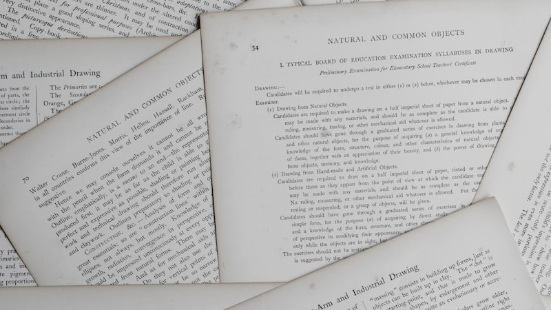

모르는 단어는 없었습니다. 그런데 답이 2번과 4번 사이에서 갈렸고, 고른 쪽이 틀렸습니다. 서울 중랑구에서 고1 영어과외 상담을 받다 보면 이 이야기가 가장 자주 나옵니다. 해석이 안 되는 학생과는 다른 문제입니다. 해석은 되는데 고를 때 쓰는 근거가 없는 상태입니다. 단어장을 한 권 더 떼도 이 자리는 그대로 남습니다.
두 개까지 좁히고 틀리는 이유
- 느낌으로 고릅니다 — "이게 더 그럴듯하다"로 결정합니다. 그럴듯함은 다음 문제에서 반대로 작동합니다.
- 지문으로 돌아가지 않습니다 — 선택지 두 개를 나란히 놓고 비교만 합니다. 정답의 근거는 선택지가 아니라 지문 안에 한 줄로 있습니다.
- 조금 맞는 선택지를 못 지웁니다 — 틀린 선택지는 대개 전부 틀린 게 아니라 한 단어만 다릅니다. 그 한 단어를 찾는 연습을 따로 하지 않으면 계속 걸립니다.
지우는 근거를 지문에 표시합니다
방법은 단순합니다. 고른 답이 아니라 지운 답에 이유를 적는 것입니다. 채점하기 전에 합니다.
- ① 남은 두 개를 적는다 — 문제 옆 여백에 "2 vs 4"라고만 씁니다. 어디서 갈렸는지 기록이 남습니다.
- ② 지운 쪽의 틀린 한 단어에 동그라미 — 선택지 문장에서 지문과 어긋나는 단어 하나를 찾아 표시합니다. 못 찾으면 그 문제는 아직 푼 게 아닙니다.
- ③ 지문에서 그 근거가 된 줄에 밑줄 — 선택지의 동그라미와 지문의 밑줄을 선으로 잇습니다. 이 선이 그어지지 않는 문제가 다음 시험에서 또 틀릴 문제입니다.
이 세 가지를 하면 한 문제에 1분이 더 듭니다. 대신 오답을 다시 볼 때 "왜 틀렸는지 모르겠다"가 사라집니다. 지운 근거가 적혀 있으니 착각한 지점이 글자로 남아 있기 때문입니다. 서술형이 있는 학교 시험에서도 같은 연습이 쓰입니다. 근거 문장을 찾아 두는 습관이 곧 답안에 옮겨 적을 문장을 고르는 연습이기 때문입니다.
2학기 중간고사까지 주차별로
- 1주차 — 교과서·부교재 지문 중 수업에서 다룬 것만 고릅니다. 선택지 지우기를 다섯 문제에만 적용합니다
- 2주차 — 지문과 선택지를 잇는 선이 안 그어지는 문제를 모읍니다. 보통 유형이 두세 개로 모입니다
- 3주차 — 모은 유형만 다시 풉니다. 같은 자리에서 또 갈리는지 확인합니다
- 마지막 주 — 시간을 재고 한 세트를 풉니다. 여백에 적는 시간까지 포함해서 잽니다
시험 범위와 서술형 비중, 외부 지문 출제 여부는 학교와 학년마다 다릅니다. 정확한 내용은 학교에서 안내하는 평가 계획을 확인하시는 것이 가장 정확합니다.
중랑구는 방문 수업이 가능합니다
중랑구로 직접 찾아갈 수 있는 선생님은 5명입니다. 그중 영어를 맡는 분은 1명이고 중1부터 고3까지 봅니다. 나머지 분들은 국어·수학·과학·사회로 나뉘어 있어 과목을 더 붙이는 선택도 됩니다. 방문이 어려운 시간대라면 화상 수업이 가능한 선생님이 673명 있고 지역 제한 없이 수업합니다. 중랑구는 묵동·중화동·상봉동이 서로 붙어 있어 보여도 언덕과 큰길로 나뉘어서, 저녁에 한 번 오가는 것만으로 공부 시간이 통째로 빠지기도 합니다.
💡 티칭코칭은 서울 중랑구 원묵고등학교 학생에게 맞춘 1:1 고1 영어과외를 방문·화상으로 제공합니다. 상담은 무료입니다.
👉 원묵고등학교 학교별 과외 안내 · 중랑구 지역 과외 안내 · 중랑구 영어과외 선생님